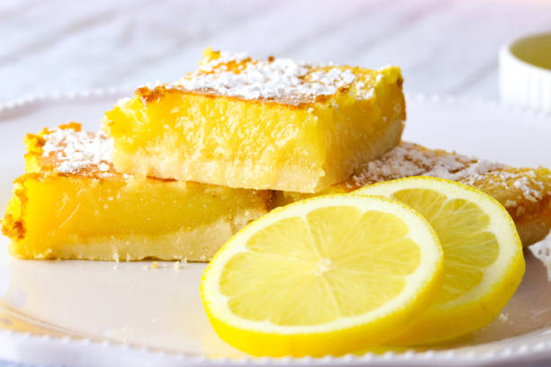

Lemon bars

Lemon bars are the absolute best dessert ever!
This is a recipe by Patty Schenck on Allrecipes.
Prep time:15 mins,Cook time:40 mins,Total time:55 mins
Servings:36
Ingredients
- 1 cup butter, softened
- ½ cup white sugar
- 2 cups all-purpose flour
- 4 eggs
- 1 ½ cups white sugar
- ¼ cup all-purpose flour
- 2 lemons, juiced
Directions
- Preheat oven to 350 degrees F (175 degrees C).
- In a medium bowl, blend together softened butter, 2 cups flour and 1/2 cup sugar.
Press into the bottom of an ungreased 9x13 inch pan.
- Bake for 15 to 20 minutes in the preheated oven, or until firm and golden.
In another bowl, whisk together the remaining 1 1/2 cups sugar and 1/4 cup flour.
Whisk in the eggs and lemon juice.
Pour over the baked crust.
- Bake for an additional 20 minutes in the preheated oven.
The bars will firm up as they cool.